Aston Family Recipes
112 recipes
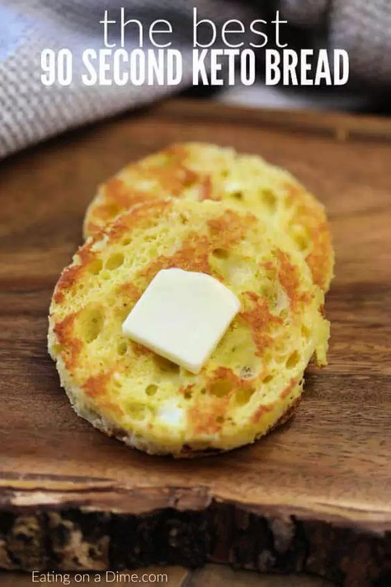
90 second carb-free breadUncategorized- AAsphault pieUncategorized
- AAston Crack (Chex Mix)Uncategorized
- BB.R.A.T. DietUncategorized
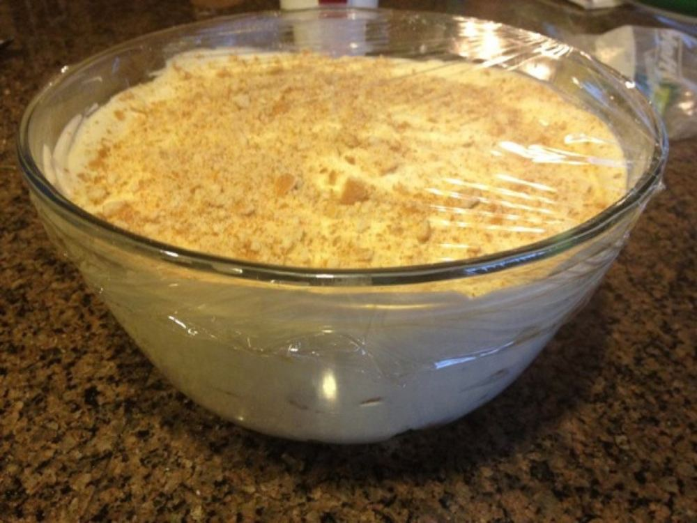
Banana PuddingUncategorized- BBBQ chicken (pulled on rolls)Uncategorized
- Bbeans and riceUncategorized
 Biscoff Banana PuddingDessert
Biscoff Banana PuddingDessert- Bblack beansUncategorized
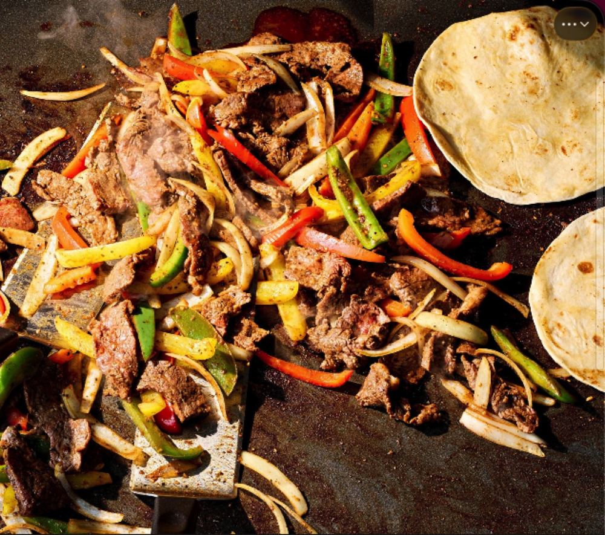
Blackstone Beef FajitasMain Dish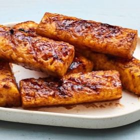
Blackstone Brazilian Grilled PineappleUncategorized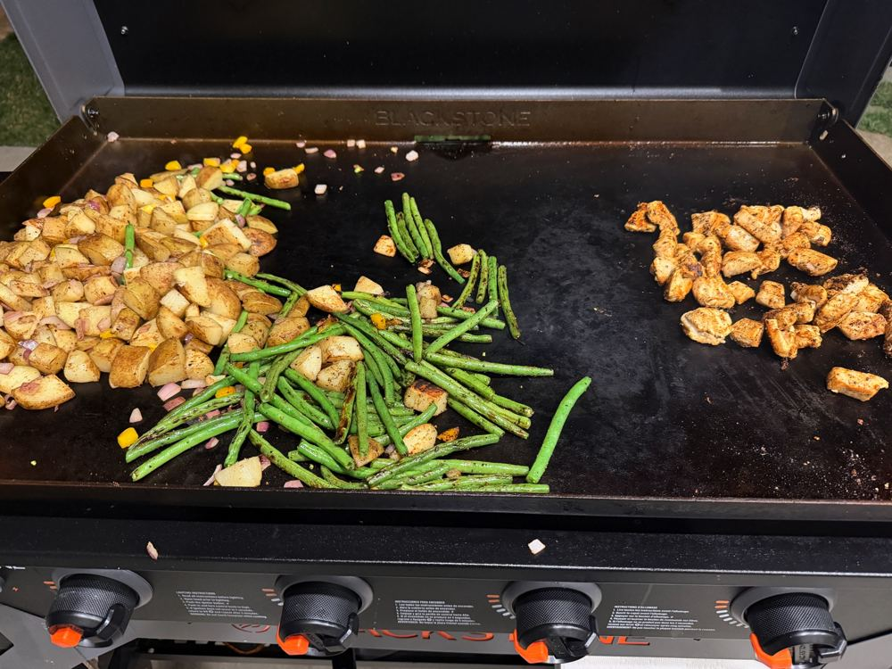
Blackstone ChickenUncategorized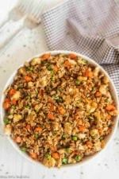
Blackstone Fried RiceUncategorized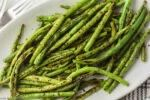
Blackstone Green BeansUncategorized- BBlackstone Lumber Jack SeasoningUncategorized
 Blackstone Mexican Street Corn "Elotes"Uncategorized
Blackstone Mexican Street Corn "Elotes"Uncategorized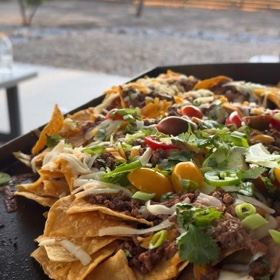
Blackstone NachosUncategorized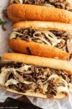
Blackstone Philly CheesesteakUncategorized Blackstone PizzaUncategorized
Blackstone PizzaUncategorized Blackstone Potatoes with green beans, chicken and steakUncategorized
Blackstone Potatoes with green beans, chicken and steakUncategorized- Bblackstone RibeyeUncategorized
- Blackstone Sausage Gravy and BiscuitsUncategorized
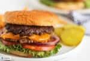
Blackstone Smash BurgersUncategorized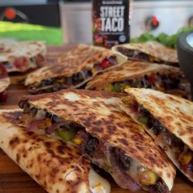
Blackstone Southwest Veggie Quesadilla RecipeUncategorized- BBreakfast PieMisc.
- Bbroccoli saladSalads, Side Dishes
- BButton Peanut Butter cup cookiesDesserts
- Ccafe rio shopping listUncategorized
- CCake PopsUncategorized
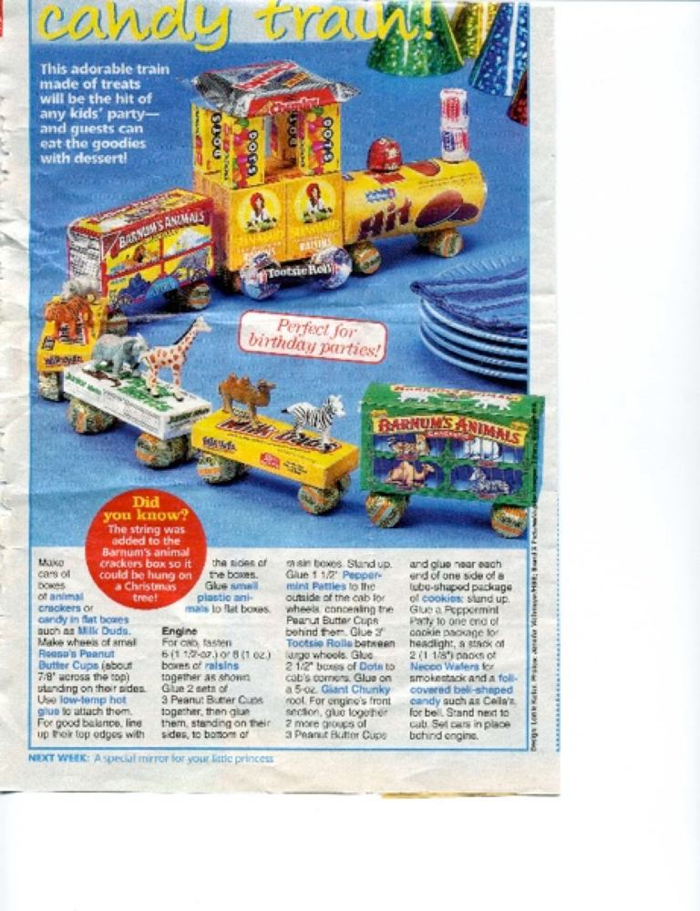
Candy TrainCandy, Christmas, Kids- Ccarmel apple dipUncategorized
- CcheeseballUncategorized
- CChicken EnchiladasChicken
- Cchicken pillowsUncategorized
- Cchicken salad sandwitchUncategorized
- Cchicken salad sandwitchesUncategorized
- CChili Cheese BakeBaked Goods, Side Dishes, Vegetarian
- Cchili dipUncategorized
- CChocolate Chip CookiesChocolate, Cookies, Desserts
- CChocolate DelightUncategorized
- CChocolate Ice-cream toppingChocolate, Ice Cream, Misc. Dessert
- CCraisin Spinach SaladFruit, Healthy, Salads
- Ccreamy chicken gravyUncategorized
- CCrispy Black Bean TacosUncategorized
- DDutch Oven OatMealUncategorized
- EEasy Dutch Oven PotatoesUncategorized
- FFanciful Fruit PizzaBaked Goods, Desserts, Fruit, Kids, Pizza, Vegetarian
- Fforgotten chickenUncategorized
- Ffour layer dessertDesserts, Pies
- Ffruit pizzaDesserts, Fruit, Pizza
- FFruit SaladFruit, Salads, Side Dishes
- Ffuneral potatoesUncategorized
 Gnochi SoupMacro
Gnochi SoupMacro- Ggrandma's fudgeFudge
- GGrandma's Homemade BreadBreads
- Hhamburger gravyUncategorized
- HHibachi (Blackstone)Uncategorized
- Hholiday slushBeverages, Christmas
- HHot RollsBaked Goods, Breads, Rolls, Thanksgiving
- JJ Dawg RecipeUncategorized
- Jjane's choc chip cookiesUncategorized
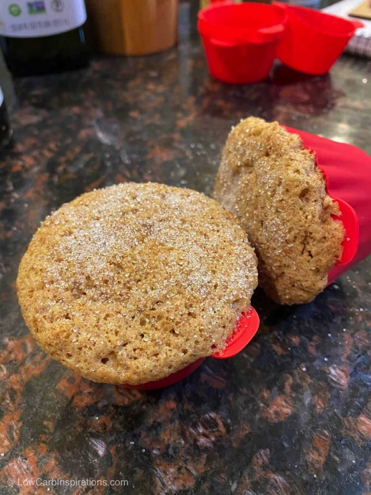
Keto Smart Cakes CopycatUncategorized- KKneaders French ToastUncategorized
- LLime RiceUncategorized
- LLimeaid PieUncategorized
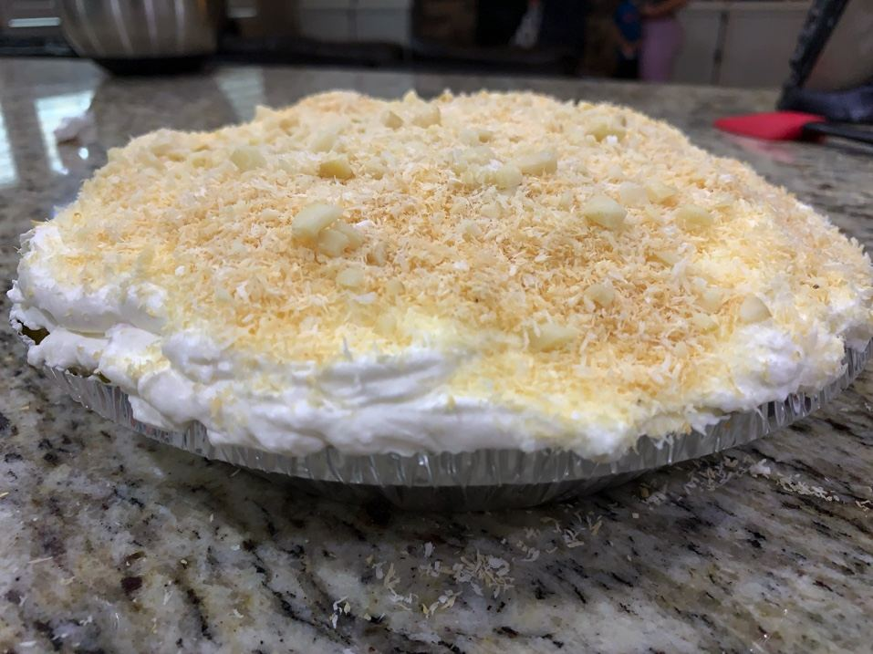
Macadamia Nut PieUncategorized- MMile High Strawberry PuffFruit, Pastries
- MMint DoughUncategorized
- Mmuddy buddiesUncategorized
- NNew York CheesecakeUncategorized
- NNo-Bake CookiesChocolate, Cookies
- OOreosBaked Goods, Chocolate, Cookies, Desserts
- PPasta SaladUncategorized
- PPeanut Butter Bars (soft)Uncategorized
- PPizza CrustBaked Goods, Pizza Doughs
- PPumpkin cakeUncategorized
- QQuick Chicken Chili30 Minute, Chicken, Chili
- RRice KrispiesUncategorized
- RRoastUncategorized
- SShepard PieBeef, Vegetable
- SShredded ChickenUncategorized
- SSnicker DoodlesUncategorized
- SSoft Sugar CookiesUncategorized
- SSouthwest slow cooker chickenUncategorized
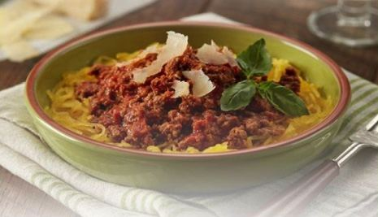
Spaghetti Squash Bolognese5 and 1- SStir FryUncategorized
 Stir Fry Rice & Tuna5 and 1
Stir Fry Rice & Tuna5 and 1- SStrawberry Mousse PiePies
- Sstrawberry/toffee saladDressings, Salads
- SStreet TacosUncategorized
- TTaco Salad ShellsUncategorized
- TTater Tot CasseroleBeef, Vegetable
- TTin Foil dinnersUncategorized
- Ttomatillo ranch dressingUncategorized
- Ttortellini saladUncategorized
- TTrey's brownie mixBrownies
- TTrifleUncategorized
- TTrufflesUncategorized
 Turkey CupcakesCakes, Chocolate, Kids, Thanksgiving
Turkey CupcakesCakes, Chocolate, Kids, Thanksgiving- UUntitledUncategorized
- VValerie's pasta saladPasta, Salads, Side Dishes, Vegetarian
- VVegetable ChiliChili, Vegetable, Vegetarian
- VVegetables over ToastMisc., Vegetable
- VVirgin Pina ColadaUncategorized
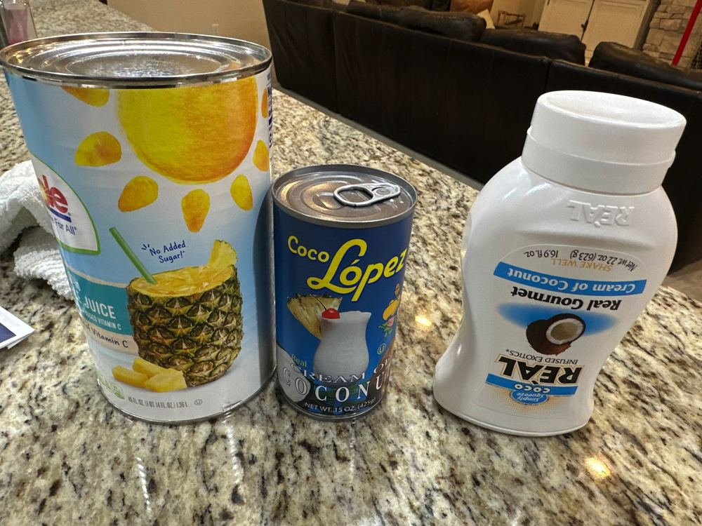
Virgin Pina ColadaUncategorized- Wwisconsin cauliflower (new to try)Uncategorized
- Wwisconsin cauliflower soupUncategorized
- YYummy FrostingCakes, Frostings and Icings
- Yyummy popcornUncategorized
- ZZucchini PastaUncategorized
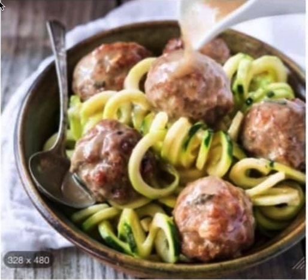
Zucchini Turkey Meatballs5 and 1- ZZuchini Air Fryer ChipsUncategorized
No recipes match.